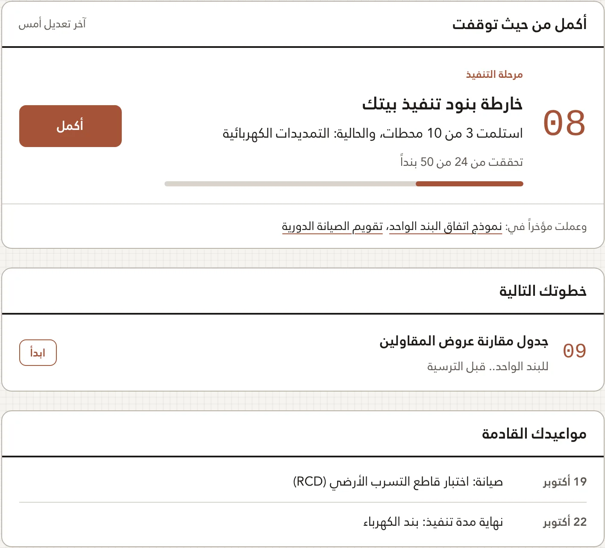

بيت العمر.. من القرار إلى السكن
البيت بيتك
ملف واحد لبيتك يرافقك في أربع محطات: القرار، والتصميم، والتنفيذ، والسكن. أدوات عملية تشتغل على بيتك أنت، وكل ما تكتبه يُحفظ في حسابك. لوحة التحكم الخاصة بك: تريك آخر ما وصلت إليه، وخطوتك التالية، ومواعيد بيتك القادمة.
ماذا تجد حين تسجّل
- حسابك ملف بيتككل أداة تحفظ عملك في حسابك، فتكمله من الجوال أو الحاسوب.
- لوحتك تعرف أين وصلتآخر ما عملت عليه وكم بقي فيه، وخطوتك التالية في مرحلتك.
- يذكّرك بمواعيد بيتكالصيانة والضمانات ومدد المقاولين، في تقويم جوالك.
- مبني على المراجعاشتراطات البناء والكود السعودي وخبرة معمارية ميدانية، وما تطبعه يخرج باسم البيت وشعاره.

القرار
من يحمل معك مسؤولية أول القرارات.. وأثقلها؟
01أسئلة الجلسة الأولى مع مصممكعشرون سؤالاً تكشف من أمامك.. قبل أن توقع 02دليل اختيار الأرضما تفحصه قبل أن تشتري أرض بيت العمر 03حاسبة البنود والتكاليفميزانية بيتك بنداً بنداً.. قبل أن تبدأالتصميم
هل تشتري مخططات.. أم تصنع قصة حياة؟
04خمسون سؤالاً قبل أن تصمم بيتكحدد احتياجك الحقيقي.. قبل أول لقاء وقبل أول خط 05أبعاد الغرف المريحةالمقاس الذي على الورق.. هل تعيش فيه براحة؟ 06اختبار القرار الذكيستة أسئلة ونتيجة واحدة.. قبل أي جهاز «ذكي» 07مخطط نقاط الكهرباء والسباكةكل فيش ومخرج ماء في مكانه.. قبل أن يُصب الخرسان ويُلّيس الجدارالتنفيذ
من يقود منظومة لا قائد لها؟
08خارطة بنود تنفيذ بيتكعشر محطات بتسلسل التنفيذ الصحيح: اتفق.. واستلم.. ووثق 09جدول مقارنة عروض المقاولينللبند الواحد.. قبل الترسية 10نموذج اتفاق البند الواحدصفحة تحميك.. تملؤها مع كل مقاول قبل أول يوم عمل 11فحص التأسيس قبل الإغلاقما يُدفن في الجدار لا يُفحص بعد اللياسة.. افحصه الآن 12جدول مواد التشطيبالمادة المناسبة للمكان المناسب.. قبل أن تقف أمام المعرض 13جداول الكميات والتكاليفمن فراغات بيتك إلى كميات التشطيب وتكلفتها.. قبل أن تتفق مع مقاول التشطيبالفحص الفني.. افحص المخطط قبل أن تفحصه الأمانة
خدمة مستقلة عن أدوات الأفراد، خاصة بالمكاتب الهندسية ومصممي المساكن. ترفع المخطط قبل تقديمه على بلدي، فيصلك تقرير يحدد كل ملاحظة بمرجعها ودرجتها وعلاجها.
ما الذي يُفحص
فحص المطابقة: الاشتراطات البلدية وكود البناء وموجهات العمارة السعودية، ومنه وحده يُبنى حكم المطابقة.
فحص جودة التصميم: صلاحية الفراغات للعيش وقواعد البيت السعودي، ولا يدخل في الحكم.
ما تستلمه
تقرير الفحص الفني: حكم المطابقة (جاهز للرفع، أو يُرفع بعد العلاج، أو يعاد للتصميم)، وكل ملاحظة بمرجعها ودرجتها وعلاجها، وأسئلة لم يجب عنها المخطط. يصلك في حسابك ويُنزّل PDF.
كيف تطلبه
- سجّل حساب المكتب.
- يُفعَّل الحساب بعد المراجعة.
- ارفع المخطط: DXF أو PDF أو صور.
- يصلك التقرير في حسابك بعد مراجعة مختص.